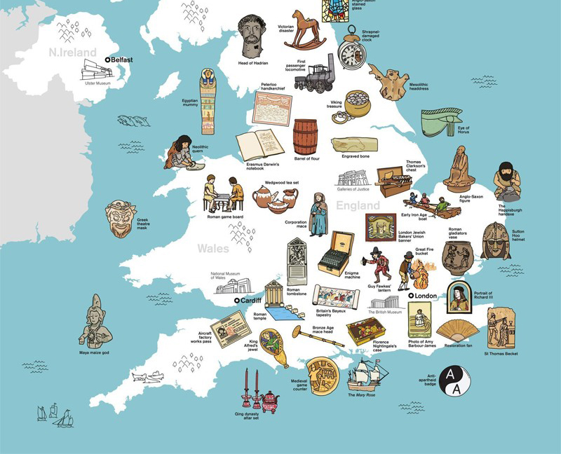
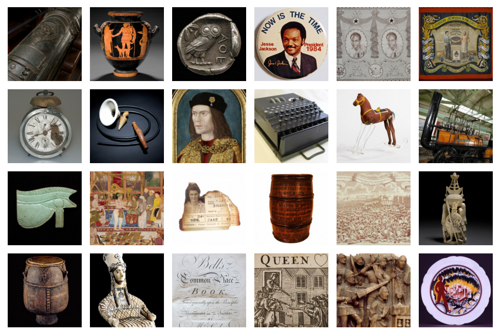

What ‘added value’ does object-based learning bring to teaching? Share your thoughts…
Objectively speaking is a free conference and debate that aims to explore the value and practice of object-based teaching. The event will be hosted at the British Museum on 4 April 2016.
Last year, the Museum worked in partnership with the Department of Education and 40 museums across the UK to develop Teaching history with 100 objects – a rich online resource that unites collections across the UK through objects, information and teaching. The project, in direct support of the new curriculum in England, aims to inspire students’ interest in history.

The British Museum and TES also recently launched the Huge History Lesson. This ambitious initiative links the world’s largest network of teachers with museums around the country through a creative challenge designed to help students unlock the incredible stories to be found in museum collections.
Both of these projects are underpinned by the idea that objects can act as a gateway to learning, by developing skills of observation and questioning, as well as by making complex ideas relatable and enabling emotional connections.

Join the conversation and share your thoughts
With the generous support of the Vivmar Foundation, the Objectively speaking conference aims to recognise the expertise and experience of museum professionals and educators across the UK and will seek to open up the debate on object-based teaching by providing a platform to share best practice and explore shared challenges.
The conference is free to all delegates, and the programme will be shaped by your contributions – the British Museum’s national programme is open to all suggestions, presentations, workshops and discussions.
Book now
– Register to attend Objectively speaking through Eventbrite
– Download the Objectively speaking event programme and synopsis